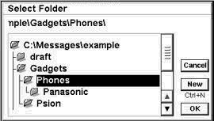
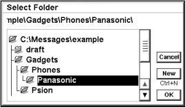
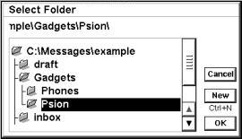

Dec/2002 ktkawabe@hi-ho.ne.jp
This is a brief instruction about the usage of XJMail.
Unfortunately a complete documentation is available only
in Japanese, but I hope this is a good starting point.
When you run XJMail for the first time, you'll be asked to fill in several forms.
First you have to enter an "account" name. In XJMail, an account is simply "a set of settings". You can define multiple accounts later, but anyway please input the first one here.
Then comes the "General Setting" dialog.
Enter the name of the editor you'd like to use. If that editor is a standard app that appears in Extras bar, you simply write the name of the editor here. If it's an OPL module that DOESN'T appear in Extras bar, you have to specify the full path of the module.
This is optional and can be left blank. If specified, XJMail will not use it's built-in mail viewer and instead use some text viewer specified here. Note that the built-in viewer is written to handle Japanese, so it cannot display non-ASCII Latin letters correctly. If that's a problem, you can use some other viewers.
This is the root folder where you want to store your emails. The text input area of this is blank at first, and when you press "OK" a folder selector dialog is launched automatically. You cannot use \System\Apps\XJMail\tmp, because this is used by XJMail for other purpose. Later you can make any kind of folder structure under this folder.
If this checkbox is ticked, XJMail automatically disconnects from the network when you have sent/received your emails, saving your GSM bill.
Then "Incoming Setting" comes, this is mostly for your POP account.
This is the name of your POP server or IP address.
These are your user name and password (if your email address is email@hoo.bar, then most probably the user name is "email" without quotations). "Current Password" is your POP password. Since you haven't entered anything, it's empty. You have to enter your password in "New Password" area.
"Advanced" Button in Incoming Setting dialog will launch "Advanced Settings" dialog.
If this is ticked, XJMail will download all of the emails that match your filter settings (see below) without asking. I prefer this mode. If this is not ticked, when connecting to POP server you'll be presented a list of emails on the server, just like the standard email app.
The name tells it all.
"Reject mails larger than" will set the "discrimination size". This is used to set the maximal size that can be automatically downloaded. For example if you set this to 10, any email larger than 10kB is not downloaded. Depending on "Peek into large mails" option, such an email is either completely untouched , or only a part of the email is downloaded. In either cases the email is left on the server. You have to set this to -1 if you want to download all emails no matter how large they are.
"Peek Into Large Mails": When checked, any email larger than the discrimination size is partially downloaded.
"Lines to fetch" is the number of lines of this "partial download". If you set this to 10, the header plus 10 lines in the body are downloaded.
If you installed APOP module, APOP Authentication option is presented. Of course you have to check this if you want to use it.
This is mostly for your SMTP server.
The host name or IP.
is your email address.
should be ticked if you want to use some kind of authentication for SMTP server. You have to choose a suitable authentication scheme for your server in "advanced setting" (see below).
Optional, can be left blank. You can make a small text file and specify the full path of this file. This file is always automatically attached at the end of your drafts.
On pressing Ctrl+a in Outgoing Setting dialog, an "advanced SMTP setting" dialog appears.
This is something unusual. If you type something in this textbox, the string you entered is used in "Reply-To:" field of the email. Though this is not recommended for general use, it is sometimes useful (e.g. when you're sending business email from your privabe mobile account, you may want to tell the recipient "please send your answer to my business email address instead of this one" or something like that).
This should be left blank in a normal circumstance. XJMail normally generates Message-Id: and Date: field automatically, but this tickbox is used to supress this. In this case, you can wish that your SMTP server will generate these fields, which may or may not work.
If you have ticked "SMTP authentication" in the SMTP setting dialog, some authentication-related settings appear here.
If you have installed authentication module (xjm_SMTPA.opo), "Change authentication type" button should be there. This button toggles the authentication mechanism between "POP before SMTP", "SMTP AUTH (CRAM-MD5)" and "SMTP AUTH (LOGIN)" cyclically.
If you haven't installed any additional module, only "POP before SMTP" is available.
"POP before SMTP" is a weak authentication mechanism that uses the POP authentication before your SMTP session, which is required for several internet service providers. (Of course ANY email client can use POP before SMTP, but XJMail offers some convenient functions for POP before SMTP, like "contacting POP server, authenticate without checking email, disconnect from POP server and send email" in one go.) For "POP before SMTP" authentication, three options are available.
"wait before SMTP" is the interval between your POP authentication and SMTP session. It is reported that, in some ISPs, the authentication speed is so slow that you have to wait for several seconds(!) after POP authentication, otherwise the SMTP session fails. "wait before SMTP" option specifies a fixed time XJMail has to wait.
As such, even if XJMail received a negative response from SMTP server, it might be that the authentication took a bit longer than usual. In that case, if XJMail tries again it may (or may not) work. For this reason, there's a second option "Max retry". XJMail simply tries to talk to the SMTP server several times. If the failure reaches the number specified here, XJMail will stop talking to the server.
The third option for "POP before SMTP" is "Timeout". While negotiating with the server (be it the first trial or some retry), if the time specified here passed before the successful authentication, XJMail will give it up.
For SMTP AUTH, two types of authentication mechanisms are supported, i.e. CRAM-MD5 and LOGIN. CRAM-MD5 is more secure in that it transfers your password encrypted, while LOGIN doesn't use any kind of encryption. If you really have to use SMTP AUTH, first try using CRAM-MD5, and try LOGIN ONLY AFTER CRAM-MD5 FAILED.
For using SMTP AUTH, you have to supply two options, namely your SMTP user name and password.
By Ctrl+r or "Remote" button on toolbar, you can connect to your pop server to download emails.
Automatic download is really easy and you don't have to think about anything, but if you prefer to see the list of emails on the server (in the same way as the standard email app), you'll probably be a bit confused at the first time, as the user interface of this process is a bit different from the standard Email app.
There's a list of the emails presented. For each of these emails, you have to set one of the 5 actions:
Depending on your settings, XJMail intelligently pre-defines the actions for each of your emails, which is shown at the left of the list by one of "MCXP " letters.
Also the letter "R" is used to indicate that the email is downloaded by XJMail in the past, and normally such email is marked as " " (i.e. do nothing).
If you want to change it, you have to use cursor keys and use m/c/d/p/u keys ("u" for "unmark").
When everything is fine, you press "Download" button (or Shift+Ctrl+D) and XJMail will download only the needed mails then deletes only the needed ones.
After having downloaded mails, you're looking at the list of the mails. If there's an email, that is listed like
M 0001: ktkawabe@hi-ho.ne.jp: Hello :3/19: 56k
The prefix "M" means that this email has more than one parts. And then a four-digit number follows representing the email's index in XJMail. The sender, subject, date and the size are also printed. In general younger emails have larger indice. The latest email is displayed on the lowest column.
Use cursor keys or pen to select an email. A selected mail is highlighted in the list. To scroll the screen, just use up/down cursor repeatedly, or use p/Del/PgUp/left to move one page back and n/tab/PgDn/right to move one page forward, or use pen to tap on the scroll buttons. ">" key takes you to the last email and "<" to the first.
Toolbars can be toggled by the standard Ctrl+T.
Tapping the selected email (or pressing Enter/Space), XJMail tries to display it. Usually the built-in viewer is used, but if you have set the external-viewer in "General Setting" dialog then a viewer of your choice is used. The built-in viewer doesn't support iso-8859-1 yet, but using external viewer that supports it, you can view accented characters correctly. However, in this case you miss small but useful features of the built-in viewer.
Or you can use Shift+Enter from within the built-in viewer to send the content of the viewer to your external editor. If the editor supports iso8859-1, the content should be displayed correctly inside the editor.
On normal (non-multipart) emails, when you've finished reading you are asked if you'd like to read the next email, the previous email or quit viewing.
Multipart emails are handled sequentially and recursively. This means that basically you read each of the parts one by one from top to bottom. Select a multipart email and tap or press enter. The header part of that email is immediately displayed. After reading that, you are asked if you'd like to read the next part, go back or quit. If you answer to read the next part, the next part is displayed and so on. If you're using the built-in viewer, in the top of the display you can find some information on which part you're reading, for example:
(part 1/3 [text/plain]) M 0046: ktkawabe@hi-ho.ne.jp: hello
This means that you are now viewing the first part of email 0046 which has 3 parts (plus a header part).
If one of the parts is in itself a multipart message, trying to read that part immediately displays the header part of that part, then the next part and so on.
If XJMail doesn't like the part it is trying to display, it asks you if you'd like to save that as a file.
The following commands are available inside the built-in viewer.
Though this is not accessible from the menu, you can change the view by Ctrl+k.
By pressing g or Ctrl+g (or "File" -> "Goto folder..."), a "Select Folder" dialog appears. You can go to any folder, or create a new one and move there if you like.
If you're using the default folder selector, see Default Folder Selector for details of its behavior.
In the mail list view, press Shift+C or Shift+Ctrl+C (or "File" -> "Copy..." from the menu) to copy the highlighted message to another folder. Press Shift+M or Shift+Ctrl+m (or "File" -> "Move..." from the menu) to move the highlighted message to another folder. Press Ctrl+d (or "File" -> "Delete" from the menu) to delete the highlighted message. The behavior of copy/move/delete is altered by the existence of marks (see the next section).
Press m or Ctrl+m (or "Marks" -> "Mark current message") to set a "mark" on the current message. Asterisk (*) at the leftmost column of the view shows you that the message is marked. After the mark is set, the cursor moves to the next email. Pressing m again on an already-marked message, the mark is unset.
By using Shift+down/up cursor, you can directly move to the next/previous marked message, skipping any unmarked ones.
Press "a" or Ctrl+a (or "Marks" -> "Mark/Unmark all") marks all of the messages in your current folder. If all of the messages are already marked, this unsets the marks from all.
Please note that, when there's one or more marked message, Copy/Move/Delete commands act only on the marked messages. The highlight is ignored in this case.
You can use ? key (or "Marks" -> "Pick and mark messages..." from the menu) to find messages in the current folder. When a "Find by Index" dialog is displayed, type the string to find and press OK. All of the messages that have matching strings in the list view is marked. For example, you can use this function to mark all of the messages from a specific sender (like "kawabe"), and then using Shift+up/down you can view only the relevant messages efficiently. Or mark the ones that have a characteristic string in the subject (mails from mailing list, like "[xjmail-test.", or from certain SPAMs, like "new concept of giving") and move/delete/copy at once.
It might be that you cannot mark all of what you want in one go. For example you may want to mark everything that have either "Psion" or "EPOC" or "Symbian". In such a case, use "pick and mark" three times. Just mark "Psion", then "EPOC", then "Symbian". "Pick and mark" function doesn't delete the marks of the previously marked messages, so you can use it multiple times until you're sure everything needed have been marked.
It is important to understand that XJMail doesn't search in the actual messages, but rather in the list view. For example, if you set the "From:" length to 10 characters in the view preferences setting, anything in "From:" line that is larger than 10 characters is truncated to 10 before being displayed, so "myemail@my.email.com" would become "myemail@my". In such a situation, you cannot find "myemail@my.email.com", so you would have to try "myemail" or "myemail@my" or something instead.
Whenever you try to reply or to make a new email, an external editor that you specified in "General Setting" is executed with some pre-defined contents. Add To: and Subject: field. Also add Cc: line if needed. If you need Bcc:, use Dcc: instead. There's a strange line comprising only four minus signs "----". This is a separator between the header and the body. Don't delete it. Normally your draft is stored in draft folder. After you think it's ready for sending, move it to out folder.
By the way, you cannot send non-ASCII Latin letters at the moment, you can use ASCII and Japanese, but that's all.
If you read Japanese, it's most convenient for us developers
if you join xjmail-test mailing list.
It is the DEVELOPMENT mailing list, but you can share your
experience/knowledge with others.
http://www.hi-ho.ne.jp/~ktkawabe/XJMail/ML.html
If you feel too awkward to receive Japanese emails once in a while, you could send email to XJMail developers.
When reporting, it is VERY useful to include the following two sets of information in your email, i.e. the component version and your setting:
XJMail comprises several components. In "About XJMail" dialog in "Tools" menu (you can also use Shift+Ctrl+A shortcut), versions of all of the important components are listed. Right after the dialog is displayed, press Ctrl+C to copy the content of the dialog to the clipboard. You can then paste this inside your email for example.
XJMail settings are written in "settings file"s.
Each account has its own settings file. If the account name
is "myaccount", the settings file name is
\System\Apps\XJMail\myaccount.ini.
A settings file is a plain text file, so you can look into
it by using text editors.
A settings file includes your personal information like your email address, POP server and POP account name, SMTP server, and (if you use SMTP AUTH) SMTP authentication user name. This file DOES NOT include your confidential information like POP password and SMTP AUTH password.
When reporting troubles, it is useful to include the settings information (preferably by copy-and-pasting the settings file) because your problem may be specific to your settings.
The default folder selector offers its full functionalities to both keyboard-based users as well as pen-based users. For pen users, its usage is too obvious, so no explanation is done here. Even for keyboard users it's easy to use without knowing anything, but you can use it more efficiently if you know deeper. Here is a brief description of its behavior.
At first, only the topmost folder and the folders just under the topmost (the topmost folder's "children") are displayed. You can use cursor key to move around, or tap the folder icon, or press the initial character of the folder name to directly move to that folder. For example you press "i" to move to "inbox". Your current selection is highlighted. When you select what you want, press Enter to finalize your selection.
Even if a folder has subfolders, these subfolders are not displayed at first (represented by a "closed folder" icon). However, as soon as you select that folder, the subfolders under that folder is revealed ("open folder" icon).
If you want to move to "Gadgets\Psion\Softwares" folder, your basic strategy would be to press "g" multiple times until you come to "Gadgets", then press "p" multiple times until "Gadgets\Psion", then "s" multiple times until "Gadgets\Psion\Softwares". In most of the cases, it is good enough to press the initials of the folders once for each, i.e. "g", "p" and then "s" to move to "Gadgets\Psion\Softwares".
The default folder selector accepts "shift" modifier to restrict the selection to the items under the same parent folder ("siblings"). This is VERY useful to minimize the number of keystrokes. Let's follow the example of the previous section ("Gadgets\Psion\Software"). This time you have another folder that begins with "P" in the "Gadgets" folder, say, "Gadgets\Phones". This also has a subfolder "Gadgets\Phones\Panasonic". Of course, even in this case the basic method described in the previous section works perfectly: Press "g" several times until you come to "Gadgets", then "p" several times until "Gadgets\Psion", then "s" several times until "Gadgets\Psion\Softwares". However, using shift modifier, things become quicker.
At first, only the toplevel folder ("c:\messages\test\" in this case) and its children are displayed. When you press "g", you move to "Gadgets", and all of the children of "Gadgets" are revealed. Since the siblings in a folder is sorted alphabetically, "Phones" is placed above "Psion".

After moving to "Gadgets", press "p" and you move to "Phones". All of the children of "Phones" are revealed including "Panasonic".

If you press "p" again, you first move to "Panasonic" because "Panasonic" is displayed above "Psion". You'd have to press "p" yet again to move to "Psion". This is OK, but sometimes you'll find this disturbing.

Instead, right after you move to "Phones", press Shift+P rather than "p" to restrict your destination to the siblings of your current selection. In this case, you were at "Phones", whose only sibling was "Psion". Though "Phones" has a child "Panasonic", since you explicitly told the folder selector that you were only interested in the siblings, the folder selector tried to find a matching entry in the sibling list and found "Psion". You are directly moved to "Psion" rather than "Panasonic", and "Panasonic"'s children are hidden.The shift modifier also works for up/down cursor keys. So you could have pressed Shift+down instead of Shift+P when you were at "Phones".
When the current selection has a "closed folder" icon, the folder selector tries to reveal the children of that folder without changing the current selection. After this, the icon changes to "open folder" icon. When the current selection has a "open folder" icon, the folder selector tries to move to the first child (if any).
If the current selection has an "open folder" icon, the folder selector "closes" the selection, hiding all of its children from the view. After that, moves to the parant (if any).
Changes the "open"/"closed" status of the current selection without moving.
Well I think at the moment that's the end of this help file. I'm sorry but this is a work in progress.